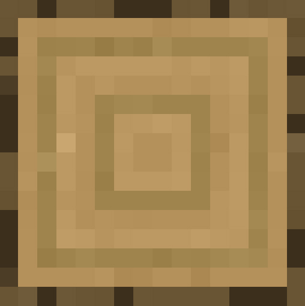
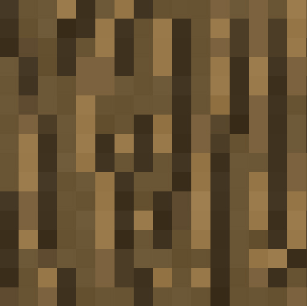

2D - pre-generated minecraft world
Tools
- Axe for cutting trees  
- Pickaxe for mining rocks
-
Shovel
for digging dirt

How To Play
Clicking on a tool followed by clicking on a tile in the world will remove the tile. (If it is of the correct type according to #1) and add it to the inventory. User can click on the tile in the inventory and place it back in the world (just the last one).